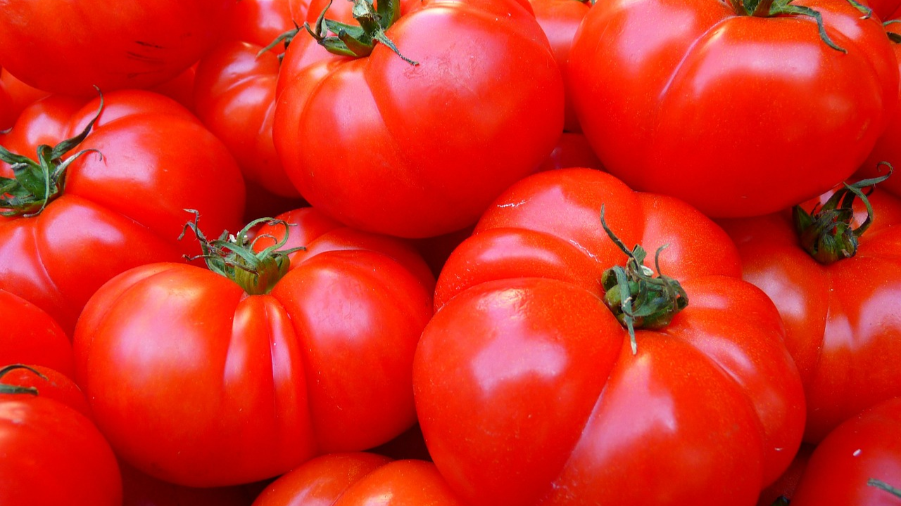
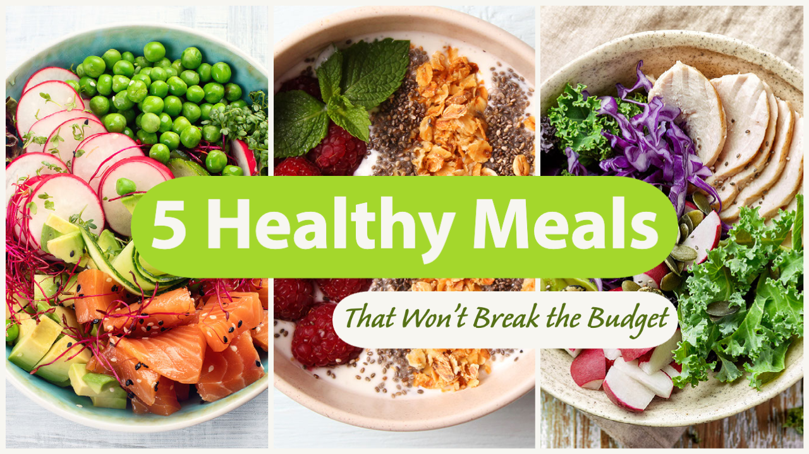
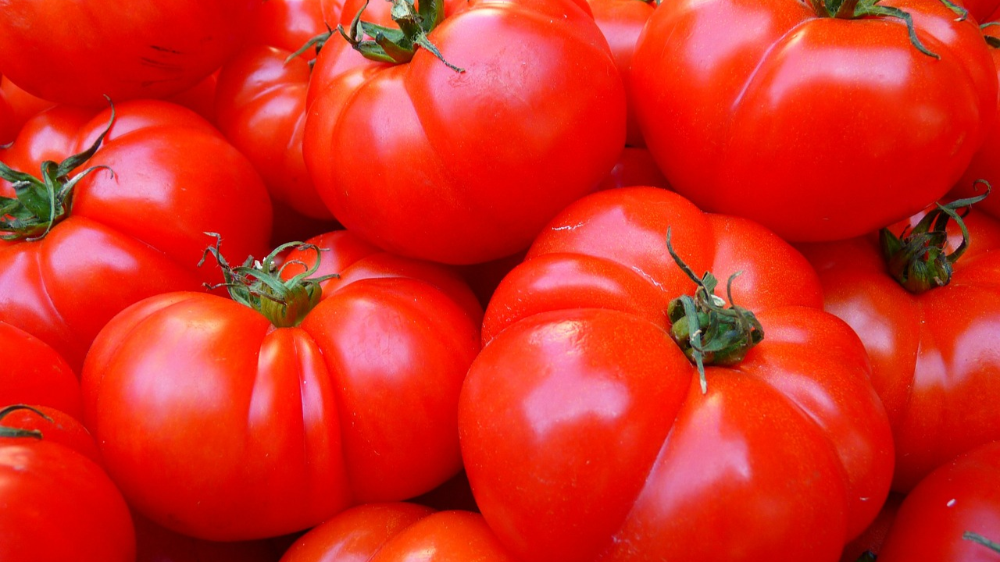
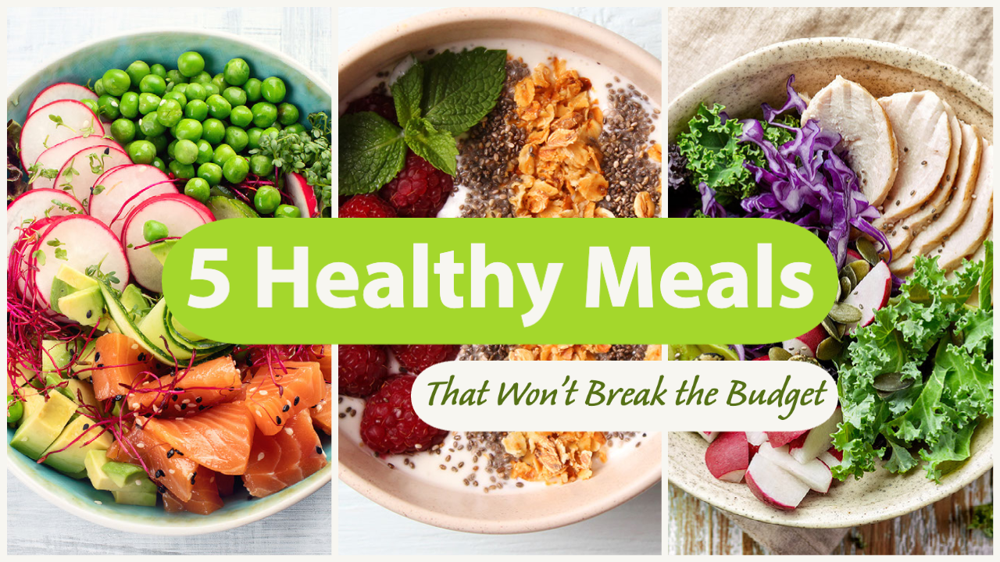

新鮮な野菜
を使った料理
無農薬有機栽培で新鮮な野菜を使った料理をコンセプトにしています
Fresh

トマトを食べてビタミンチャージ。酵素作用でカラダ元気
Healthy

野菜をメインに使ったカラフルな料理。満足感が高いです。
Tasty

ソースを生かした料理の数々。驚きと感動。満足感が高いです。
無農薬有機栽培で新鮮な野菜を使った料理をコンセプトにしています

トマトを食べてビタミンチャージ。酵素作用でカラダ元気

野菜をメインに使ったカラフルな料理。満足感が高いです。
ソースを生かした料理の数々。驚きと感動。満足感が高いです。